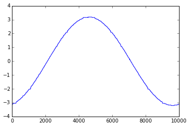

iPython console
Interactive python interpreter
This utility allows you to type and execute simple scripts.
It has several useful features such as TAB based autocompletion, and inline plotting.
The hardware instance is already connected, and can be accessed via the variable I .
e.g. I.get_voltage(‘CH1’) will return the voltage on input CH1.
check out the following example to plot the input from CH1 which has a sine wave connected to it.
An interactive Python Console!
Access hardware using the Instance 'I'. e.g. I.get_average_voltage('CH1')
In [4]: from pylab import *
In [5]: %matplotlib inline
In [6]: x,y=I.capture1('CH1',1000,10)
In [7]: plot(x,y)
Out[7]: [<matplotlib.lines.Line2D at 0x7f0885b4b550>]

In [8]: